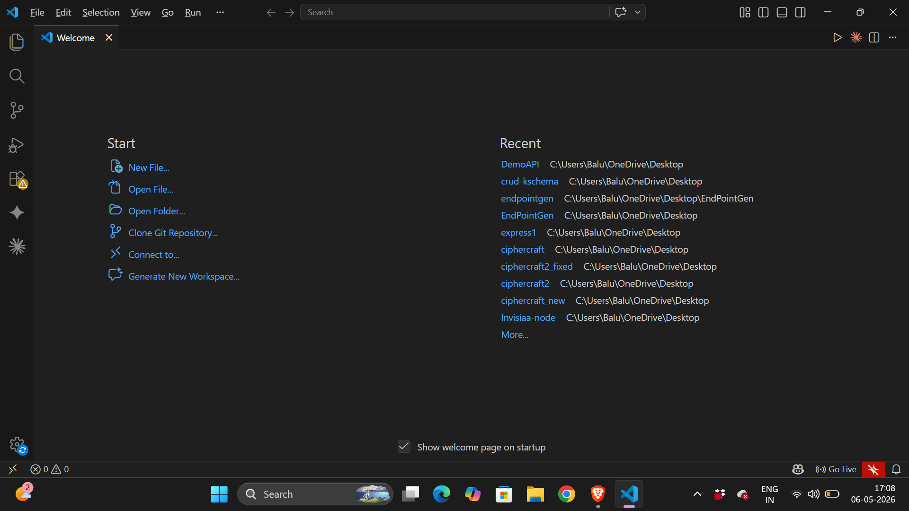
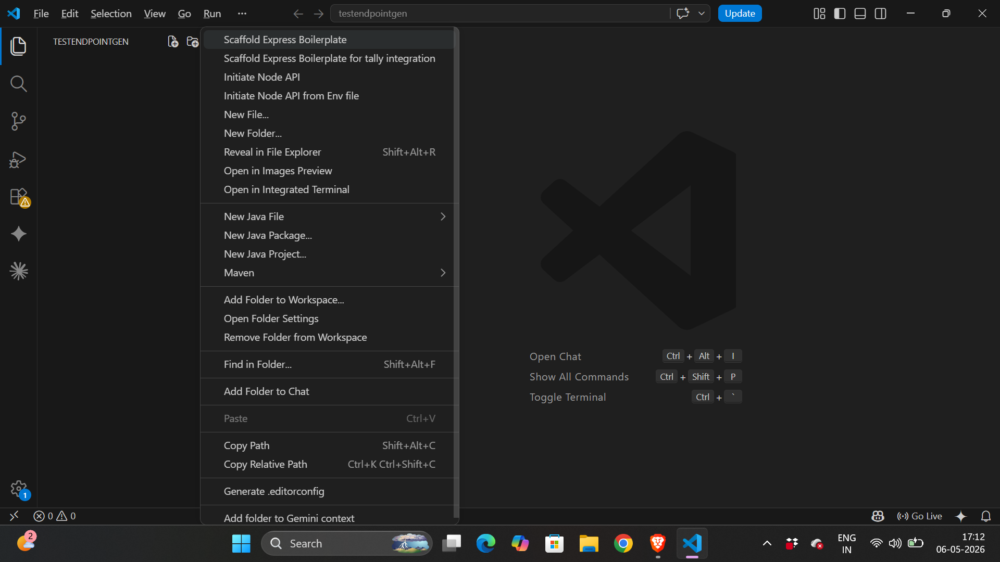
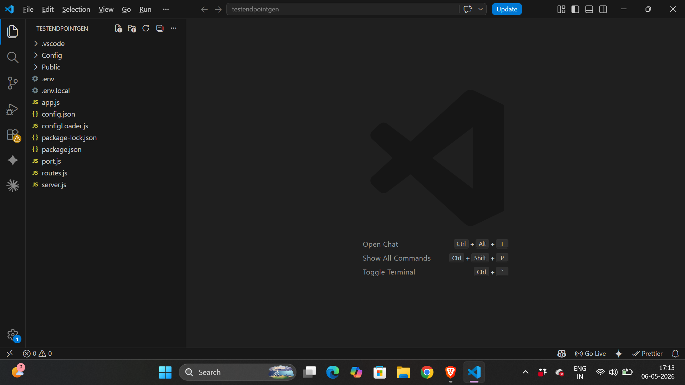
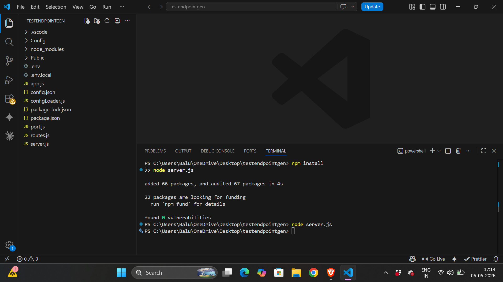

1. Introduction
Scaffold Express Boilerplate is a command provided by the EndPointGen VS Code extension. The purpose of this command is to automatically generate a professional Express.js backend project structure from an empty folder using a single right-click action inside Visual Studio Code.
2. Objective
The main goal of this command is to reduce repetitive backend setup work and provide developers with a ready-to-use Express.js architecture instantly.
- Automates Express backend scaffolding
- Creates modular backend architecture
- Reduces manual file creation
- Provides environment configuration support
- Supports frontend integration folders
- Improves developer productivity
3. Practical Workflow
The developer opens an empty folder in VS Code, right-clicks the folder inside Explorer, and selects the command "Scaffold Express Boilerplate". The extension automatically generates the required backend project structure.
4. Generated Project Structure
Config/ ForFrontEnd/ Public/ .env .env.local app.js config.json configLoader.js port.js routes.js server.js package.json
5. Explanation of Generated Files
- Config/ → Stores configuration-related files.
- ForFrontEnd/ → Used for frontend integration support.
- Public/ → Stores static files such as images and frontend assets.
- .env → Contains environment variables.
- .env.local → Stores local development environment variables.
- app.js → Main Express application setup.
- config.json → Stores application configuration data.
- configLoader.js → Loads configuration dynamically.
- port.js → Handles port normalization and validation.
- routes.js → Central routing configuration file.
- server.js → Starts HTTP server separately from application logic.
- package.json → Contains project metadata and dependencies.
6. Architecture Understanding
VS Code Explorer
↓
Right Click Command
↓
EndPointGen Extension
↓
Command Handler
↓
Filesystem Generation
↓
Express Boilerplate Created
The extension follows an orchestration-based architecture where commands trigger automated file generation logic.
7. Features Observed
- Automatic Express project generation
- Environment configuration support
- Static file hosting setup
- Frontend integration folder support
- Modular server structure
- Routing separation
- Professional backend architecture
8. Benefits
- Reduces setup time
- Minimizes repetitive coding
- Maintains consistent project structure
- Helps beginners start backend development quickly
- Improves scalability and maintainability
9. Step-by-Step User Usage
This section demonstrates the complete real-world workflow of using the Scaffold Express Boilerplate command inside Visual Studio Code.
Step 1 — Open Visual Studio Code
Launch Visual Studio Code and open the welcome page.

Step 2 — Install EndPointGen Extension
Open the Extensions Marketplace using Ctrl + Shift + X, search for EndPointGen, and install the extension.
Open VS Code Marketplace
Step 3 — Create and Open Empty Folder
Create an empty folder such as testendpointgen and open it inside VS Code.

Step 4 — Right Click and Select Scaffold Command
Right click the project folder in Explorer and select Scaffold Express Boilerplate.

Step 5 — Automatic Boilerplate Generation
The extension automatically generates the complete Express.js backend architecture.
Config/ Public/ .env .env.local app.js config.json configLoader.js port.js routes.js server.js package.json

Step 6 — Install Dependencies and Run Server
Open the integrated terminal and execute the following commands.
npm install node server.js

10. Extension Links and Resources
- VS Code Marketplace: https://marketplace.visualstudio.com/
- Visual Studio Code: https://code.visualstudio.com/
- Node.js: https://nodejs.org/
- Express.js: https://expressjs.com/
11. Conclusion
Scaffold Express Boilerplate is a powerful productivity-focused automation command provided by the EndPointGen extension. It converts an empty folder into a professional Express.js backend architecture using a single Explorer context-menu action. The extension simplifies backend initialization, improves consistency, and accelerates development workflows.